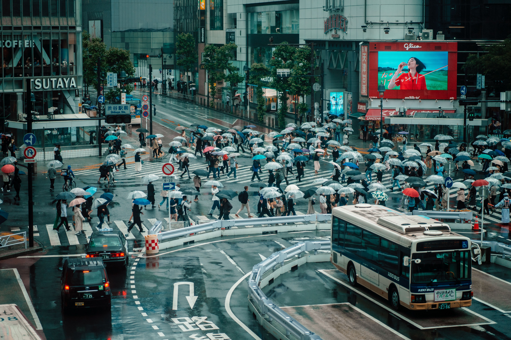
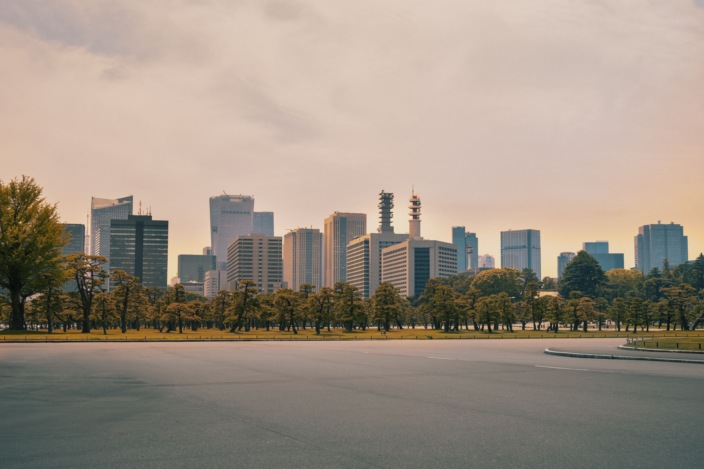
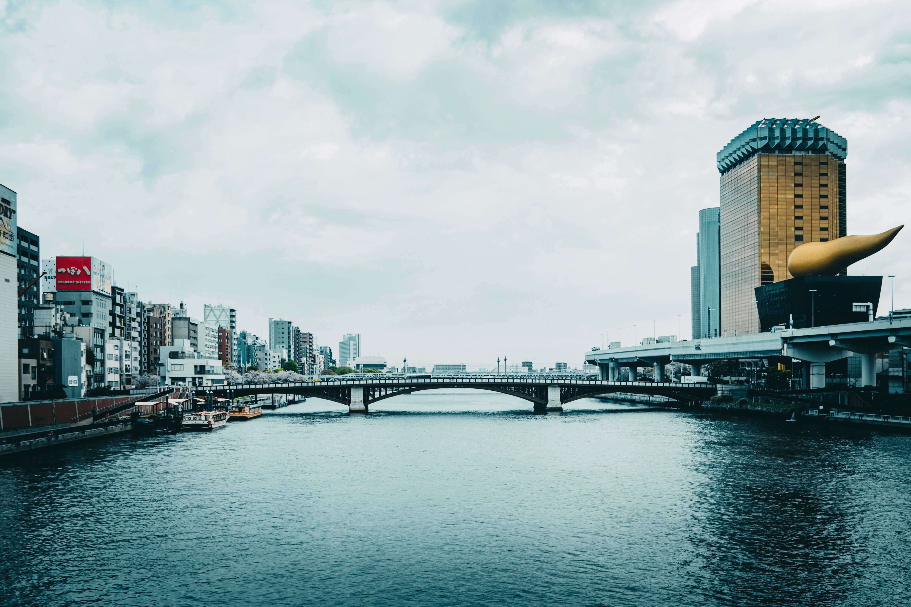
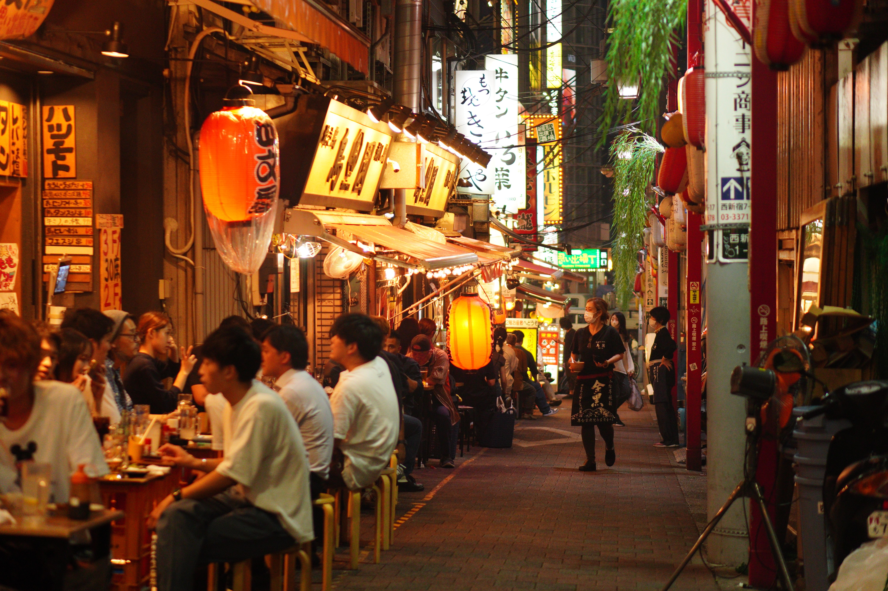

Multimédia
Nesta página encontra conteúdos multimédia.
Fotografias | Destaque | Tóquio em movimento | Vídeo | Vista de cima | Poesia
Fotografias







Destaque

Onde o antigo e o futuro partilham a mesma rua.
Tóquio em movimento
Uma cidade que nunca para, de dia e de noite.
Vídeo
Vista de cima
Mais de 2000 km² de cidade.
Poesia
Sob o néon que acorda a madrugada,
Tóquio respira em ruas sem descanso,
Em Shibuya a multidão cruzada
Segue o seu passo, apressado e manso.
No Sensō-ji o incenso sobe ao céu,
As sakuras pintam o rio de rosa,
E o Fuji, ao longe, envolto no seu véu,
Guarda a cidade, antiga e luminosa.